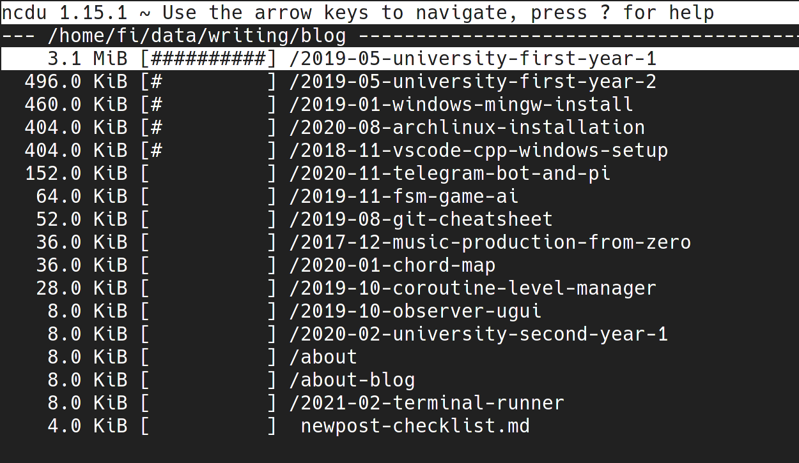
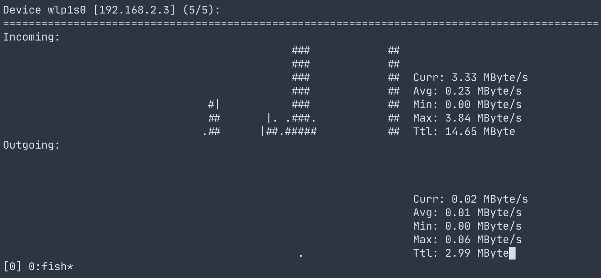
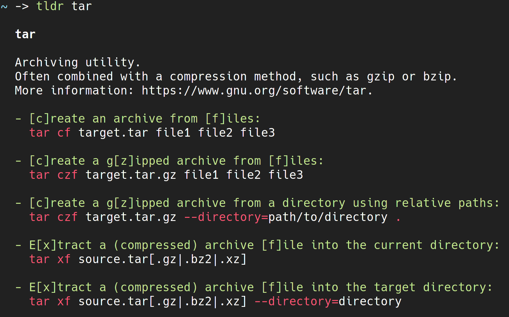
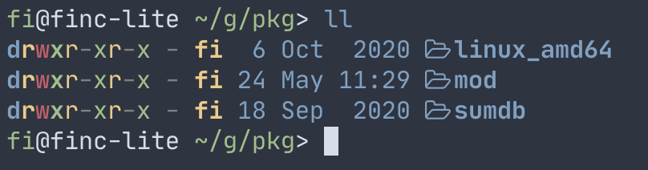
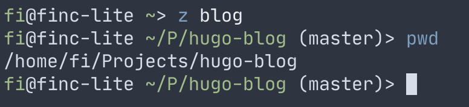
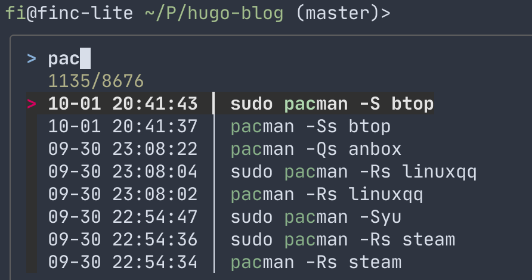

终端工具新手上路包
2021-03-18本文遵循懒人原则：花最少配置时间最大幅度提升你的工作效率。
终端程序推荐
安装过程略。推荐使用包管理器，或查询相应帮助文档手动安装。
btop系统资源监视工具。（这是我目前见过最漂亮的命令行工具！）

-
ncdu查看文件大小。
-
nload网络监控工具。
-
ag文本搜索工具。
-
fzf模糊搜索工具。直接在命令行调用可以搜索文件名，但更好的使用方式是在ranger、vim或fish中搭配使用。
-
rangerVim 风格的终端文件管理器。下文仍有相关介绍。
-
nnn终端文件管理器，资源占用非常低。我在树莓派上使用nnn. -
proxychains-ng以及graftcp，连接命令行程序到代理服务器。 -
tldr太长不看，懒人必备，查询某个命令的使用示例。如果要看详细文档请使用man.
-
exa增强美化版的 ls 命令。
命令行
基础
推荐阅读：命令行的艺术 ，比较长，你也可以通过视频来学习这些操作。
一些简单有用的快捷键：
Tab补全命令、参数。上下方向键历史记录。ctrl + a光标移动到开头。ctrl + e光标移动到末尾。ctrl + u清除当前内容。ctrl + f光标往前移动。ctrl + d删除光标下的字符。ctrl + r查询历史命令。
fish

系统的默认 shell 往往过于简洁，缺少一些方便的辅助功能，比如高亮、自动补全、分支信息等等。如果没有其他需求，我在终端进行的操作都会使用 fish 完成；除非我需要编写 bash 脚本。（fish 的脚本语言不兼容 bash.）
亮点：
- 新手友好，开箱即用！不用做过多的配置工作。
- 反应迅速。
- 出色的补全功能。
- 自带 Web 端配置界面，直观。
如果想拓展 fish 的功能，需要使用 fisher 安装插件。
推荐插件：
-
z根据模糊关键词，快速打开文件夹。以下图举例，根据关键词“blog”，切换到最匹配的文件夹。
-
fzf.fish把模糊搜索功能加入到 fish 中！以下图举例：在按下ctrl + r搜索历史记录时使用模糊搜索。
下拉终端
英文名称叫 Drop-down Terminal
当你在终端可以完成大部分工作的时候，如果有一个快捷键可以快速打开和关闭终端（就像抽屉一样），工作效率将会大大提升。这就是下拉终端：
- Linux：推荐使用 Guake 或者 Yakuake.
- macOS: 修改 iterm2 的设置可以满足这个需求，但是体验可能不是很好。
文本编辑器 Vim
学习 Vim 的目的不只是更快地输入代码，而是拥有一套工具能更贴合思维地操作代码文本。使用 Vim 时，很少会使用 ctrl 键和其他键组合，大部分时间只同时敲击一个键。
入门视频教程：Vim Tutorial - YouTube - Ben Awad
Vim 大量使用了 Esc 键。我交换了 Caps Lock 键和 Esc 键的功能，否则无法获得流畅的体验。你可以通过系统设置修改（Linux 以及 macOS 都很方便），或者直接通过键盘本身的硬件功能修改。
关于 Vim 的配置教程，推荐 Bilibili Up 主 TheCW
我不使用 Vim 开发程序，因为它的配置方式并不简单，需要大量时间学习，我更喜欢开箱即用。
Jetbrains 系列 IDE 可以安装 ideavim 插件，目前支持的功能已经很多了，强烈推荐。ideavim 插件也可以把自定义的 Vim 快捷键与 IDE 功能绑定，举个例子，我把代码格式化功能绑定到了 <leader>f：
nnoremap <leader>f :action ReformatCode<CR>
具体配置方法：Executing IDE Actions
终端文件管理器 ranger
ranger 是一款终端文件管理程序，拥有 Vim 风格的键位绑定（比如使用 hjkl 移动浏览）。
在初学 Linux 命令行操作时，我认为 ls、cd、mv 等命令远远不如图形界面方便。直到我开始上手 ranger.
本文省略关于 ranger 的用法，请查看官方文档 。（顺便提一下，fzf集成 非常好用。）
附带小技巧：如何在退出 ranger 时切换工作目录？
在默认配置中，退出 ranger 时，工作目录并没有改变。使用以下别名启动 ranger 可以实现这个功能。
将下列内容加入到你使用的 shell 的启动配置文件中。（比如 .bashrc ）
# 退出 ranger 的时候，cd 到相应的目录
# bash 或者 zsh
alias ranger='ranger --choosedir=$HOME/.rangerdir; LASTDIR=`cat $HOME/.rangerdir`; cd "$LASTDIR"'
# fish
alias ranger='ranger --choosedir="$HOME/.rangerdir"; cd (cat $HOME/.rangerdir)'
终端复用器 Tmux
Tmux 常被用于将远程服务器的会话和窗口解绑，让程序保持运行。这篇文章可以帮助你入门 Tmux 的使用：Tmux 使用教程 - 阮一峰的网络日志
Tmux 也能作为分屏工具使用。它的默认键位并不顺手，但是通过自定义快捷键，终端的使用体验会得到大幅提升。

我的配置文件： .tmux.conf
结语
本文介绍的内容并不深入，如果你有兴趣，可以沿着这些兔子洞折腾一下。
最后，分享一些我自己也没有看完的学习资料：